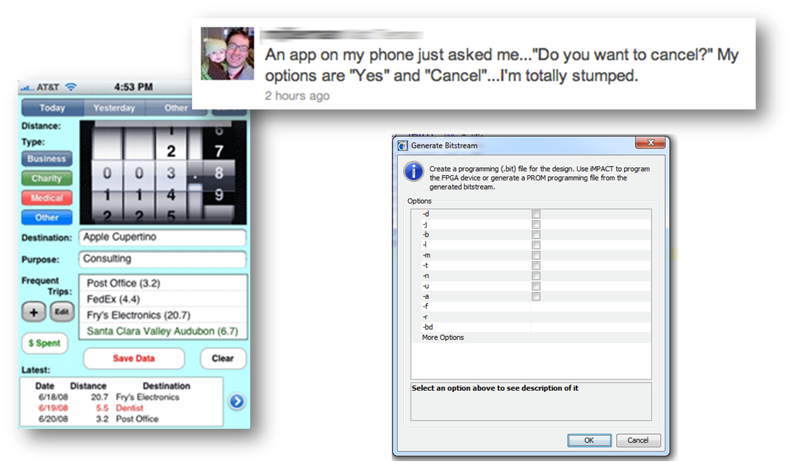
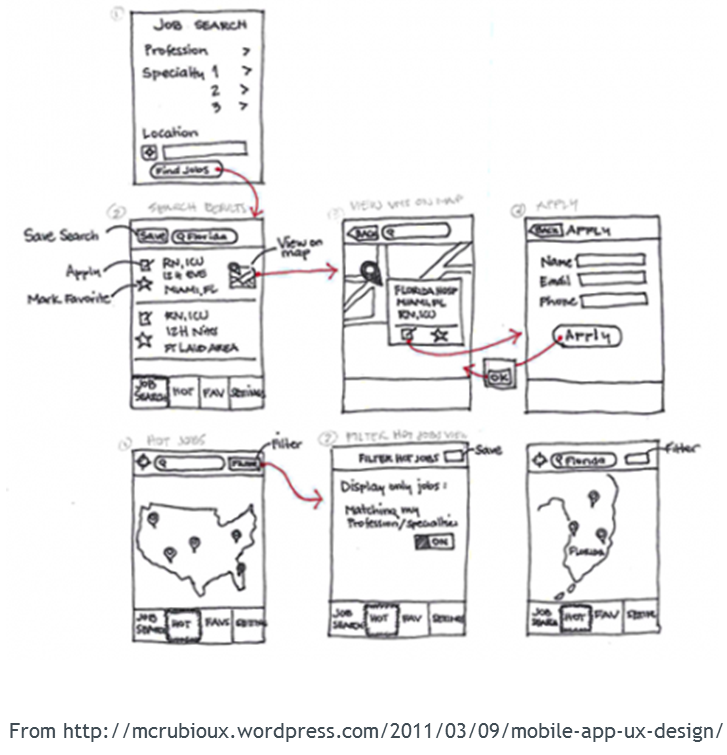
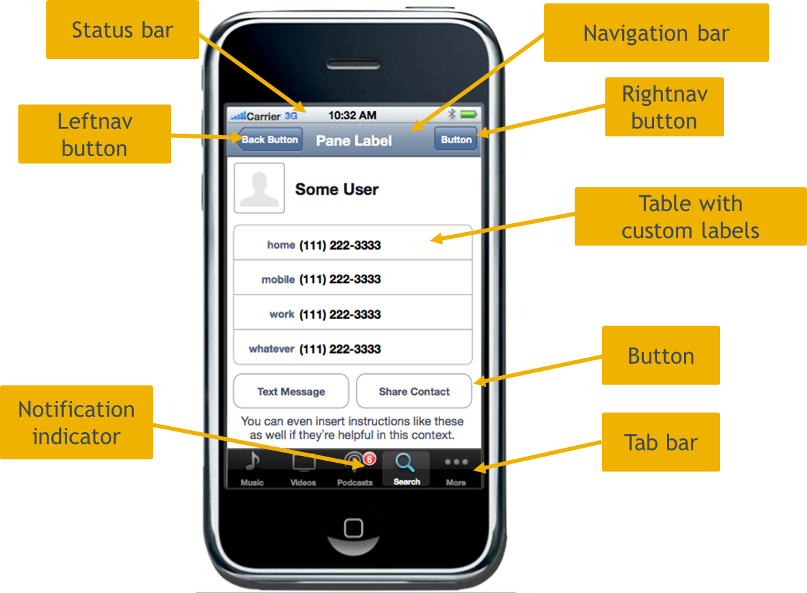
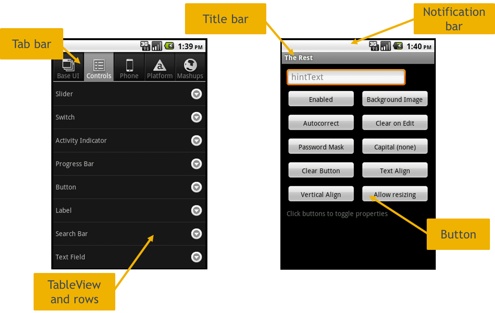
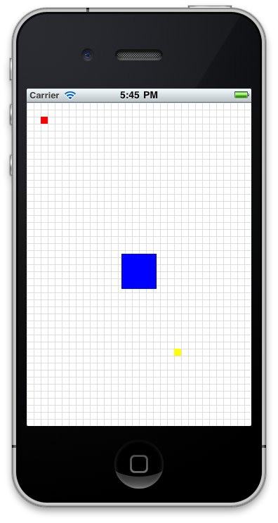
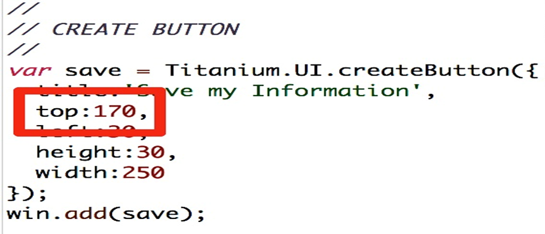
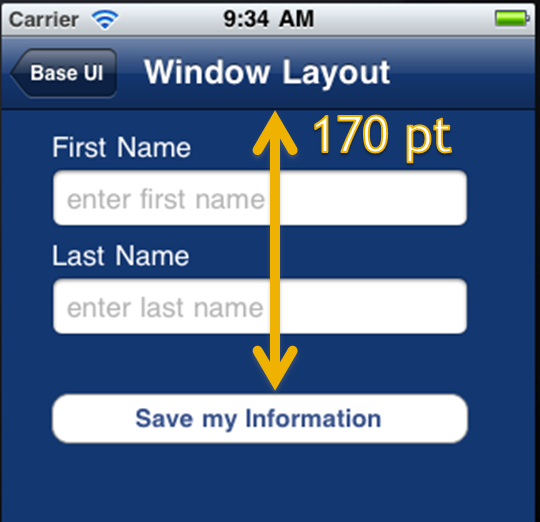
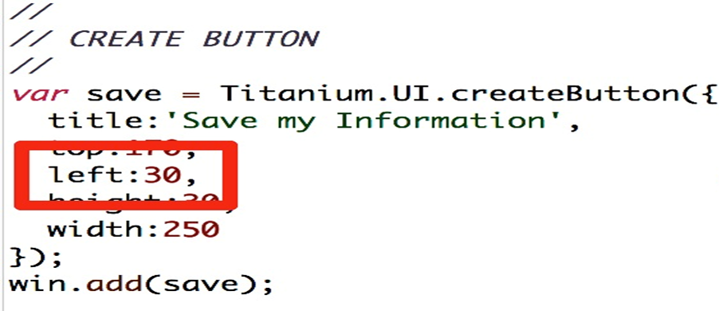
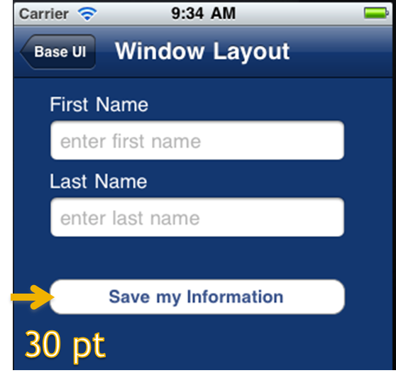
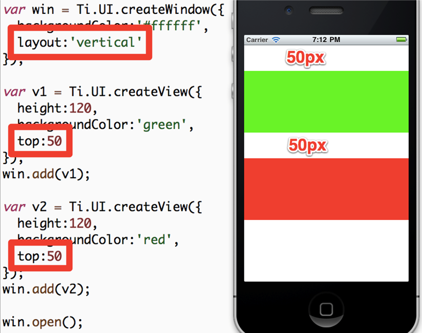

Creating the User Interface
Agenda
- UX and UI Design
- Units, Positioning, and more
- Events and User Interaction
User Experience / User Interface

What is UX?

UX, or user experience, is all about how your app works. Not what it looks like. Think about your user and the way they'll use your app. How do screens flow from one to another? Are buttons in the right place? Are you showing too much or too little information?
The 3 examples
- Tweet: confusing options and actions
- App on left: too much info, too much in app, controls poorly laid out -- there's no flow or logical indication of what comes first
- Dialog: not a mobile app, but still poor UX — It asks users to select command-line switches. If user knows what those switches would be used for, they'd be typing at console. If they don't, then the dialog doesn't give appropriate info.
Critical Questions
You need to answer the following:
What problem(s) am I solving?
Who are my key users?
What are their needs?
When developing any application you need to ask these fundamental questions. These questions form the foundation atop which you build your application. If a feature doesn't address a user's need, or will serve only a few users, leave it out!
Sketch it!

When designing your app, sketch it out. You can use a simple notepad. Index (3 by 5) cards are pretty close to the size of a mobile phone. You can sketch each screen on a card. Then, flip through the deck to get a general sense of how your app will flow. You can even share the cards with others to see what they think of the design and flow.
iOS User Interface Components

Briefly introduce the key iOS user interface components especially for the Android users in the class
Android User Interface Components

Briefly introduce the key Android user interface components especially for the iOS users in the class
Units, Positioning, and More
Units
Definitions: dip = display-independent pixels == 'points'
System units - on Android = pixels; on iOS = dip
Absolute measurements: px (pixels), dp/dip, mm, cm, in
Relative measurements: % = percent of the parent's height or width
var view = Ti.UI.createView({
/* You would not normally mix units like this */
top: '10mm',
left: '5px',
width: '30%',
height: 50 /* default system units are used here */
});
Can set a default unit in tiapp.xml
See wiki for how-to
Coordinates Grid
iPhone (original or Retina) - 320 by 480 point grid
iPad (original or Retina) - 1024 by 768 grid
Android sizes vary:
- HVGA = 320 by 480 px
- WVGA800 = 480 by 800 px
- WVGA854 = 480 by 854 px
You can use dp/dip units on Android to achieve the same density independent grid as is default on iOS.
Positioning

top and leftbottom and rightcentersize provides rendered dimensions
Layout modes
- Absolute
- Vertical
- Horizontal
Absolute — relative to parent not screen Vertical & horizontal — apply to parent object — we'll see examples in upcoming slides
Absolute Layout


We have here a window with a couple UI elements
The button is positioned 170 points from the parent's top edge
Absolute Layout


Absolute, left 30 points from left edge
Vertical Layout

Parent object has the Vertical layout
Child object's positions are then in relation to each other within the parent
'Auto' Behaviors
- Deprecated - use Ti.UI.SIZE or Ti.UI.FILL instead
- SIZE: buttons, labels, images, text fields and areas
- FILL: windows, views, tables, webviews
- Some are mixed: table rows - FILL for width and SIZE for height
Used to set 'auto' as value for height or width and Ti would 'figure it out'
But that was inconsistent across platforms and view components
You can now be more explicity by specifying FILL (fills parent) or SIZE (sized to fit its contents)
Events and User Interaction
Event Handling
Similar To JavaScript in the browser
Can use addEventListener on nearly any JS object
Can programmatically fire events on objects as well
Demo: A simple event handler in the default project
Add event listeners to objects at a component, object or app level
Programmatically fire events
Demo:
- Test app from prev. module or new default app
- Add event listener to the label on win1, change text of label(Note: 'tap' event is the same as 'click')
- Build, click label to see event fired
Application-Level Events
Useful for sending JSON-serializable data across contexts
Useful for publishing and subscribing to application events even in a single context
Critical API in component oriented applications
Demo: Cross-context messages in the default application
Using App level events, we can de-couple our UI from our logic
UI components can listen for events and update themselves
Events can just alert or pass JSON serializable data
Demo:
- Move win 2 to win2.js, using Ti.UI.currentWindow
- Label2, subscribe to app:labelclicked event
- receives data in event object
- update label2 text & color
- In win1.js, click event handler fires app:labelclicked
- pass message text as second arg
- Build — doesn't work — window has to have been opened to receive events
Q&A
Homework
- Homework objective 1
- Homework objective 2
- Homework objective 3
Assignment URL: (fill_in_here)